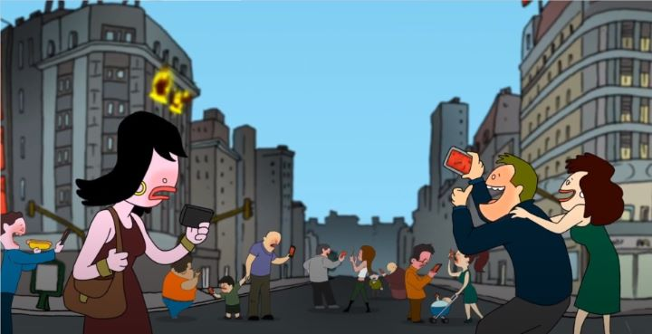

In 2020, a certain pandemic shut down the world. Many conventions and festivals, for their sake and for their fans, experimented with online-only events, at drastically reduced prices. The same was true for "Annecy," the world's largest animation film festival, held in France every Summer. They presented (most of) their 2020 selection online, all accessible with an "online pass" at about $30 USD, the price of perhaps two in-person films in normally sold-out theaters. I still hope to visit the real event one day, as a pilgrimage any animation fan should take as a tourist, but this online version is a great alternative that I hope remains."LAVA" is a 2019 film from Argentina. It was part of Annecy's "Contrechamp" category, reserved for the more unusual "auteur" feature films, typically made with a small team and a small budget. That sort of thing requires lowering one's expectations, and within reason, can lead to wonderful surprises. "LAVA" is not wonderful.Rendered with the visual quality blending "South Park" and old "Newgrounds" cartoons, "LAVA" is set in a modern-day city. The main character, Nadia, is a tattoo artist, who lives with a female friend, her having a boyfriend. There's a fourth one, a guy, who the two are trying to help Nadia hook up with. At the start of the movie, Nadia gives a tattoo to a man who claims to be an underground comic artist, and happens across his designs in a independent "zine" on her way home. Just in time too: as the friends sit down to watch torrented tv episodes, the electronics short out to a mysterious static signal. The phenomenon occurs across the city. The next day, massive cats are sitting on roof tops. The electric signal takes over airwaves again, hypnotising anyone with a smartphone or a tv. The end times are coming.The plot evolves to a post-apocolyptic horror-thriller, where a demon race uses mass media to easily defeat humanity. But catching on fast, Nadia and her friends maintain themselves, and escape through the streets as the cats (and a massive man-eating snake) attacks the survivors. It just so happens that tattoo 'zine predicted all of this, and has hidden instructions to fight back, leading to a cult that might be able to challenge this unstoppable threat. All through the power of alternative media and art.  Chances are, you have alternative forms of media in your downtown area. Things like independent newspapers that seek to offend and redfine how you think. Or tattoo parlours that liken themselves to modern-day renaisannce art studios. Or that used record store that only sells LP's and cassette tapes, in 2020, with a tattered box of homemade ones near the entrance. I come across these often, and want to get into them, but all I see is mindless, meaningless stuff that tries too hard to be alternative to any accepted norm, because they won't let "the man" tell them what to do. If you're already a fan and part of that underground scene, "LAVA" might be your new favorite cult-classic. But after explaining my perspective, I can state that this was rubbish. I can go along with the idea that some dark force would use mass media to control the vulnerable human race. But to claim that salvation would come from making a magazine of psychadelic ink-designs outside their control, make no sense, at all. "LAVA" is aware of its absurdity, throwing in plenty of jokes, including wall-breaking references to the movie being a cartoon, or explaining why the movie is "so forward thinking." I didn't buy into any of it, and didn't laugh. The delivery and writing of the lines is so awkward, I can't imagine how anyone would... maybe something got lost in the subtitle translation. The one saving grace for "LAVA" is not knowing what to expect as it goes on. The story gets increasingly more epic (?) and violent. The first 15 minutes are hard to sit through, but after that, I had to know how it ended (even though the process to get to the ending was still a drag). Mercifully, the movie is short, and the interesting (albiet confusing) ending is worth the adventure, wadding through bad jokes, bad art, bad acting, and bad animation. Indeed, it represents its counter-culture perfectly, for better or for worse.
- "Ani" More reviews can be found at : https://2danicritic.github.io/ Previous review: review_Last_Exile Next review: review_Like_The_Clouds,_Like_The_Wind